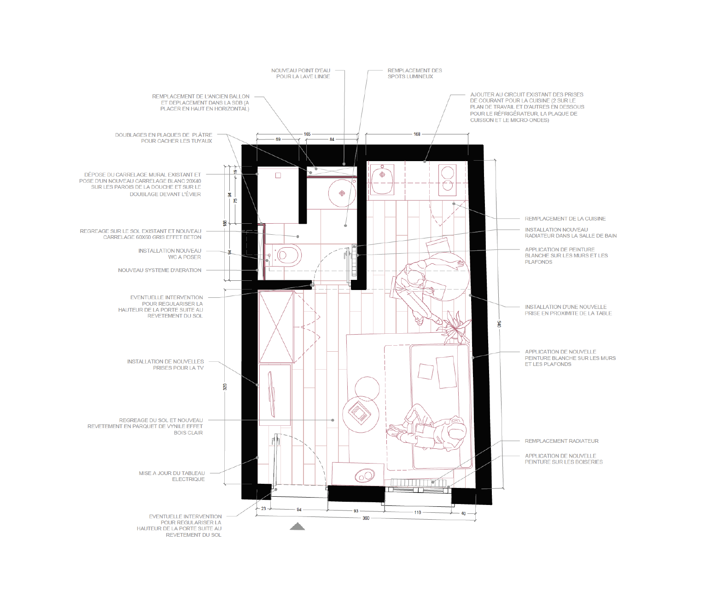
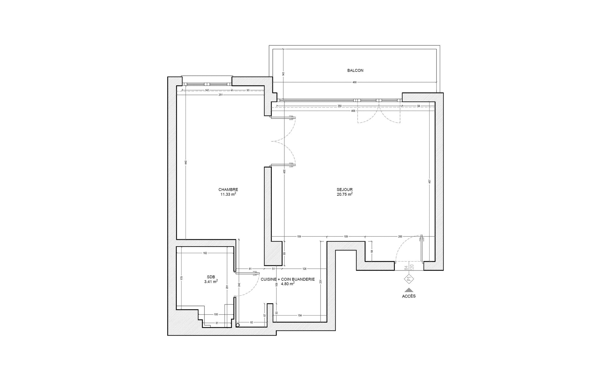

servizi
cosa posso
fare per te.
Dalla definizione dei bisogni alla progettazione esecutiva, in ambito residenziale e commerciale.
01progettazione
Definizione dei bisogni e del concept, progettazione preliminare, stima dei costi, scelta dei materiali e degli elementi d’arredo, progettazione esecutiva con disegni di dettaglio e computo metrico, contatto con imprese e fornitori.
02visualizzazione 3D
Modellazione 3D e/o fotomontaggio con resa fotorealistica, utile alla visualizzazione del progetto o alla vendita di immobili con potenziale inespresso (vuoti, con superfici degradate o con arredo obsoleto).
03arredamento su misura
Progettazione di dettaglio per la creazione di elementi d’arredo su misura (da uno sgabello a una cucina completamente accessoriata), contatto con fornitori e artigiani.
04graphic design
Creazione di pattern, disegni ed elementi decorativi per elementi d’arredo, ringhiere, vetrate, pannelli, tessuti, ecc.
05virtual home staging
Per professionisti del settore immobiliare: rendering fotorealistici di immobili vuoti, con un arredamento fuori moda o da ristrutturare, per presentarli al meglio e aumentare il numero di potenziali acquirenti.

metodo
come lavoro.
-
01
ascolto
Partiamo dai tuoi bisogni, dalle abitudini e dal budget per definire insieme il concept del progetto.
-
02
stile
Moodboard e palette di colori per scegliere l’atmosfera giusta: materiali, arredi, luce.
-
03
progetto
Progettazione preliminare, stima dei costi, scelta di materiali e arredi, con visualizzazioni 3D per vedere lo spazio prima di realizzarlo.
-
04
esecutivo
Disegni di dettaglio e computo metrico, contatto con imprese, fornitori e artigiani.
